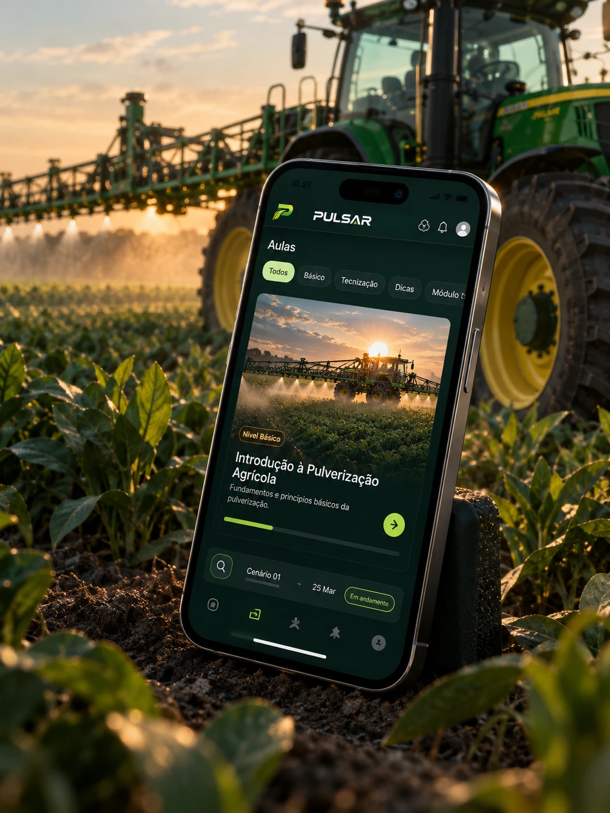
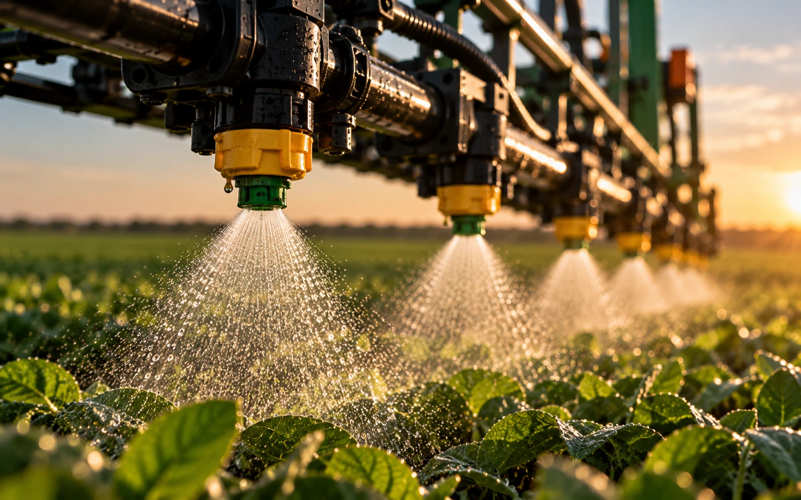
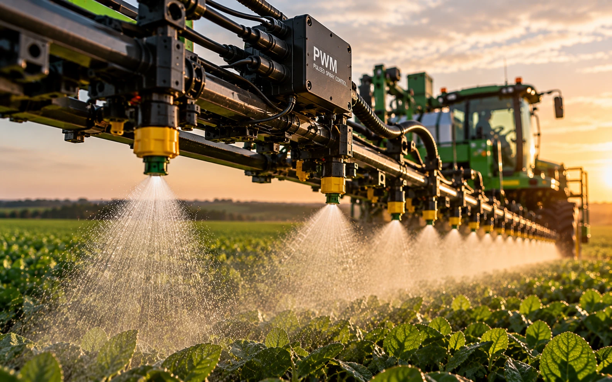
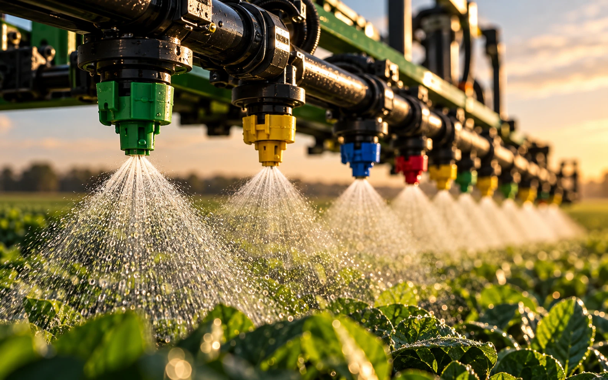
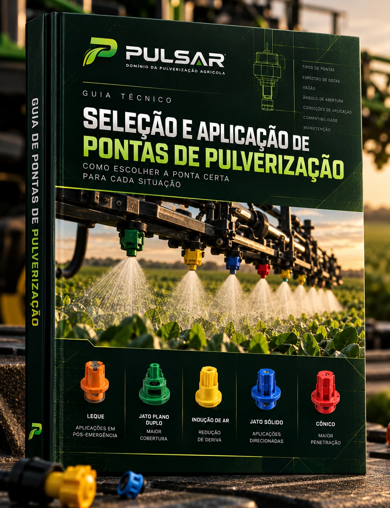
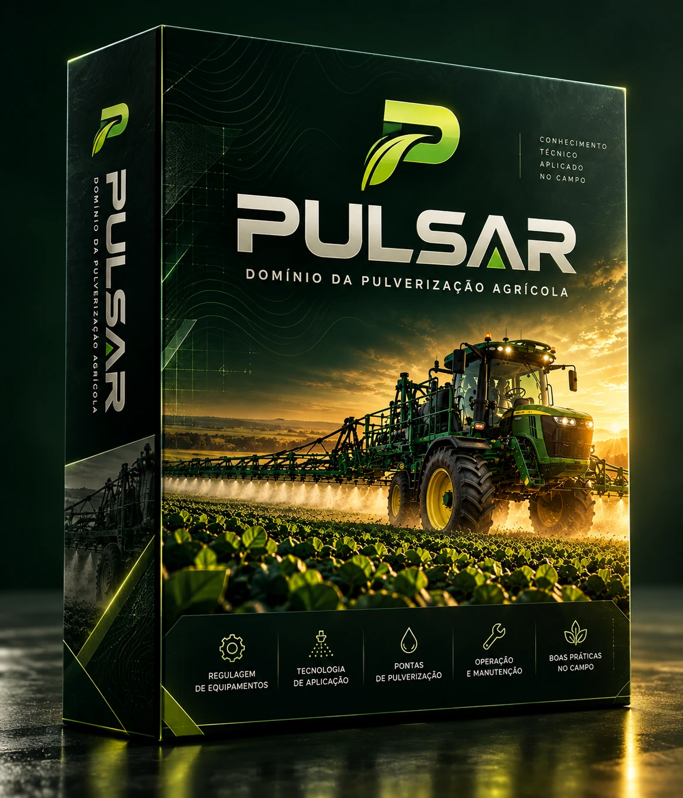
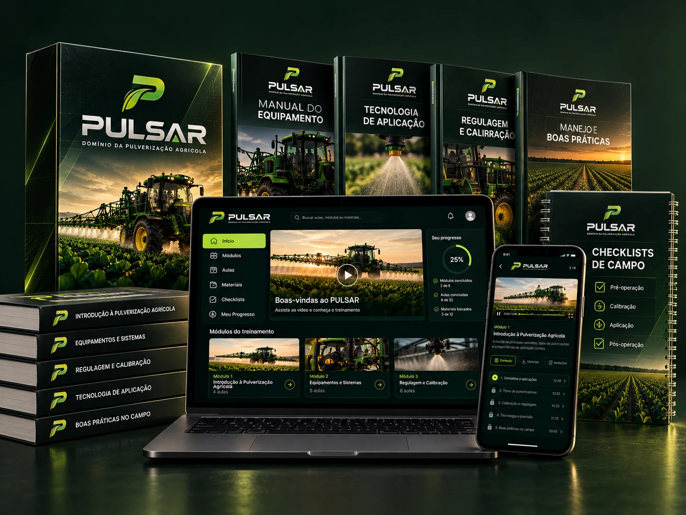

Domine a técnica por trás da pulverização agrícola.
Aprenda os fundamentos da tecnologia de aplicação, regulagem de pulverizadores, seleção de pontas, operação e manutenção de equipamentos agrícolas.
Precisão se aprende. Domínio se constrói.
Um treinamento digital, construído para o campo real.
O PULSAR reúne, em um só lugar, o conhecimento técnico que todo aplicador precisa: fundamentos de pulverização, tecnologia de aplicação, regulagem, pontas, operação e manutenção — no formato que você consulta no escritório e leva para dentro da cabine.
- Aulas em vídeo, módulo a módulo, no seu ritmo
- Materiais de consulta: manuais, guias e checklists
- Acesso pelo notebook e pelo celular, inclusive no campo

No campo, o erro não aparece na hora — aparece no resultado.
Boa parte das perdas na pulverização não está no produto, e sim na forma como ele é aplicado. Pequenas decisões técnicas mudam tudo.

- 01
Regulagem inadequada
Vazão, pressão e velocidade no hábito — a dose que chega ao alvo não é a planejada.
- 02
Escolha incorreta de pontas
Ponta e espectro de gotas errados para o alvo geram falha de cobertura ou deriva.
- 03
Falta de inspeção
Barra, filtros e bicos verificados só quando o problema aparece — e o custo já foi embora.
- 04
Tecnologia subutilizada
Recursos do equipamento ignorados por falta de domínio técnico da aplicação.
O conteúdo do PULSAR, do fundamento à gestão.
-
01
Fundamentos da Pulverização
Conceitos essenciais, tipos de pulverizadores e a lógica por trás de uma aplicação correta.
-
02
Equipamentos e Componentes
Barra, bombas, filtros e o circuito hidráulico — como tudo funciona em conjunto.
-
03
Pontas e Tecnologia
Classes de pontas, espectro de gotas e como escolher a ponta certa para cada situação.
-
04
Regulagem e Calibração
Cálculo da taxa de aplicação, aferição de vazão e uniformidade da barra.
-
05
Aplicação no Campo
Leitura das condições, janela de aplicação e boas decisões durante a operação.
-
06
Manutenção e Inspeção
Rotina preventiva de barra, filtros e pontas, limpeza e descontaminação.
-
07
Pulverização Pulsada
Controle PWM: uniformidade, cobertura, controle de frequência e redução de deriva.
-
08
Gestão e Resultados
Organizar a operação para aplicar o necessário — com mais eficiência e menos perdas.
Pulverização pulsada (PWM): precisão que você controla.
Entenda como o controle por pulso — ligado e desligado em alta frequência — permite ajustar a aplicação em tempo real, mantendo a uniformidade e reduzindo a deriva.

Dos componentes à barra: entenda o equipamento que você opera.
O treinamento aborda pulverizadores autopropelidos e seus sistemas, com fundamentos que se aplicam a equipamentos de diferentes fabricantes do mercado.
O PULSAR é um treinamento independente. As marcas de equipamentos eventualmente citadas servem apenas como referência técnica — não há vínculo, patrocínio, parceria ou certificação dessas empresas.

A ponta certa para cada situação.
Cada classe de ponta entrega um padrão de aplicação diferente. O PULSAR mostra como ler esse código de cores e escolher conforme o alvo e a condição.
- Leque — aplicações em pós-emergência
- Jato plano duplo — maior cobertura
- Indução de ar — redução de deriva
- Jato sólido — aplicações direcionadas
- Cônico — maior penetração
Guias e checklists para consultar quando precisar.


Feito para quem vive a pulverização todos os dias.
Operadores de pulverizadores
Que querem aplicar com precisão e método, não por tentativa e erro.
Trabalhadores rurais
Que lidam com os equipamentos e querem entender a técnica a fundo.
Profissionais do agronegócio
Que precisam padronizar a operação e elevar o nível técnico da equipe.
Quem quer aprender
Interessados em pulverização agrícola que buscam uma base sólida.

Acesso completo ao PULSAR.
- Treinamento completo em vídeo, dos fundamentos à gestão
- Guias técnicos, manuais e checklists de campo
- Acesso pelo notebook e pelo celular
Pagamento processado em ambiente de checkout seguro.
Ainda com dúvidas? Comece por aqui.
O que é o PULSAR?
Para quem é o treinamento?
Quais assuntos são abordados?
Como funciona o acesso?
Quais materiais estão incluídos?
A próxima etapa do seu conhecimento começa aqui.
Domine a técnica, opere com precisão e reduza perdas no campo.